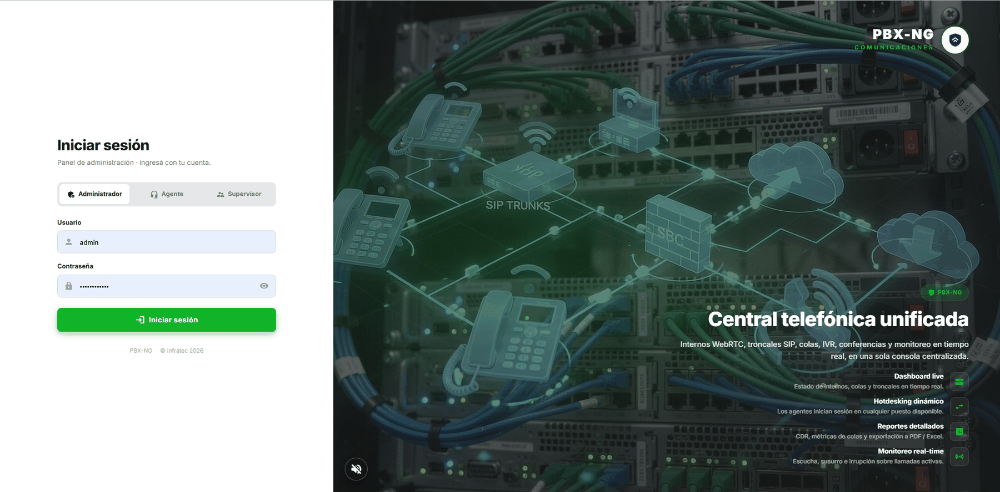

Para quién es este manual
Para la persona que instala PBX-NG por primera vez en un servidor: técnico, integrador o
administrador de sistemas. No hace falta saber de Asterisk; sí manejarse con una terminal Linux.
1. Antes de empezar
1.1 Qué vas a instalar
PBX-NG es una central telefónica que se despliega como appliance: un conjunto de módulos independientes que se activan según lo que necesite el cliente. Cada módulo es un contenedor.
| Módulo | Qué aporta | ¿Es obligatorio? |
|---|---|---|
core | Asterisk, base de datos, API y panel de administración | Sí |
sbc | Borde SIP: seguridad, troncales, anclaje de medios | Solo si hay troncales SIP |
turn | Traversía de NAT para los teléfonos WebRTC | Sí si hay softphones fuera de la red |
ai | Motor de voz: TTS (anuncios) y STT (transcripciones) | Opcional |
intercom | Video de porteros y cámaras (RTSP → navegador) | Opcional |
proxy | Reverse proxy con certificados TLS | Solo si no tenés uno propio |
1.2 Requisitos
- Servidor: Debian 12 o Ubuntu 22.04, 2 vCPU y 4 GB de RAM como mínimo (más si vas a
transcodificar muchas llamadas simultáneas).
- Docker y el plugin
docker compose. - Un dominio apuntando al servidor (por ejemplo
pbx.cliente.com) y su certificado TLS. - Los puertos abiertos que se detallan en la sección 4. Este punto no es opcional: es la
causa número uno de instalaciones "que registran pero no tienen audio".

2. Elegir la topología
2.1 Una sola máquina (recomendado para empezar)
Todo corre en un servidor. Es lo indicado para una central única, una oficina, o una prueba.
2.2 Dos máquinas: núcleo + borde
El núcleo (Asterisk, base de datos, panel) queda en la LAN, y el borde (SBC, TURN) en la DMZ, expuesto a Internet. Es la topología que se usa cuando la seguridad perimetral importa: si alguien vulnera el borde, no llega a la base de datos ni a las grabaciones.

3. Instalación
3.1 Descargar e instalar
git clone https://github.com/flavioGonz/pbx-ng.git
cd pbx-ng/docker
./install.shEl instalador es interactivo: te pregunta el rol de la máquina, qué módulos querés levantar, el dominio y la IP pública. Genera todos los secretos solo (contraseñas de base de datos, JWT, ARI, AMI, TURN) y los guarda en docker/.env con permisos restringidos.
Nunca edites
.enva mano para poner contraseñas. El instalador tiene un control previo queaborta si detecta un secreto débil o de ejemplo. Está ahí por algo.
3.2 Instalación en dos máquinas
Primero el núcleo, que genera el archivo de unión con los secretos compartidos:
./install.sh --role=core --public-ip=<IP_WAN> --domain=pbx.cliente.com --edge-ip=<IP_LAN_DEL_BORDE>Copiá ese archivo al borde e instalá allí:
scp docker/edge-join.env root@<IP_BORDE>:/opt/pbx-ng/docker/
# en el borde:
./install.sh --role=edge --join=edge-join.env --public-ip=<IP_WAN>El borde valida que llegue al núcleo (base de datos, AMI, ARI) antes de desplegar nada.

3.3 Primer acceso
Al terminar, el instalador imprime la contraseña inicial del usuario admin. Entrá al panel (https://tu-dominio) y cambiala en el primer ingreso — el sistema te lo va a exigir.

4. Firewall y NAT
Esta sección decide si la central funciona o no. La señalización suele pasar sola; el audio es lo primero que se rompe.
4.1 Lo que se publica a Internet
| Puerto | Protocolo | Para qué |
|---|---|---|
443 (y 80 para el certificado) | TCP | Panel, softphone web y WSS |
5060 / 5061 | UDP+TCP / TCP | SIP: troncales y teléfonos físicos |
30000-40000 | UDP | Audio de las troncales (rtpengine) |
3478 | UDP y TCP | STUN/TURN — los dos, muchas redes bloquean UDP saliente |
49152-65535 | UDP | Rango relay del TURN |
5349 | TCP | TURN sobre TLS (recomendado para redes corporativas) |
Los dos errores más comunes:
1. Abrir
3478y olvidar el rango49152-65535/UDP. El teléfono obtiene el candidato de relay,pero el audio nunca fluye. Van juntos, siempre.
2. Abrir
3478/UDPy no3478/TCP. Muchas redes corporativas bloquean UDP saliente.
4.2 Lo que nunca se publica
5432 (base de datos), 6379 (Redis), 3000 y 3001 (API y panel, van detrás del proxy), 5038 (AMI), 8088 (ARI), 81 (admin del proxy).
4.3 Verificarlo de verdad
Que el servicio esté "activo" no prueba nada. Verificá lo que hace un teléfono real:
scripts/check-turn.py --env docker/.env --tcpSi la salida dice ALLOCATE 200 · relay = …, el TURN está alcanzable y autenticado. Si no, revisá docs/FIREWALL.md, que tiene el detalle completo y la trampa del NAT hairpin.

5. Activar y desactivar módulos
Un módulo activo es un contenedor que existe; uno inactivo no existe. Se maneja desde el panel (Configuración → Módulos) o por línea de comandos:
pbxng-ctl status # qué módulos están activos
pbxng-ctl enable intercom # crea el contenedor
pbxng-ctl disable intercom # lo destruye
6. Actualizar la central
Las actualizaciones se hacen por imagen versionada, no parchando archivos:
cd docker
export PBXNG_VERSION=X.Y.Z
./deploy.sh # o ./deploy.sh --images=pbxng-X.Y.Z-images.tar.gz (sin internet)deploy.sh baja las imágenes, corre las migraciones de base de datos y levanta todo. Para volver atrás, desplegá la versión anterior. El detalle está en RELEASE.md.
7. Si algo no funciona
| Síntoma | Dónde mirar |
|---|---|
| El teléfono registra pero no hay audio | Firewall: rango de relay del TURN y 30000-40000/UDP. Corré check-turn.py. |
| El softphone web no conecta | El proxy debe permitir WebSocket en /ws (y con HTTP/2 desactivado). |
| El panel no carga datos | Contenedor api: docker compose logs api. |
| No entran llamadas | Estado de la troncal en Monitoreo. Activá la alerta de troncal caída. |